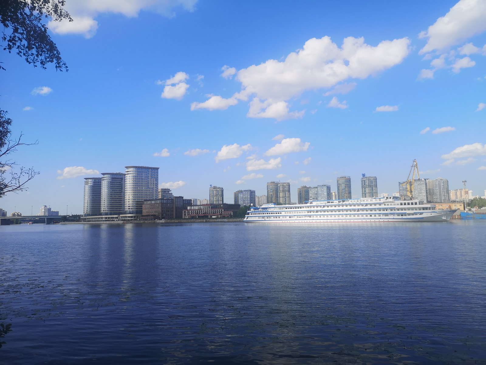
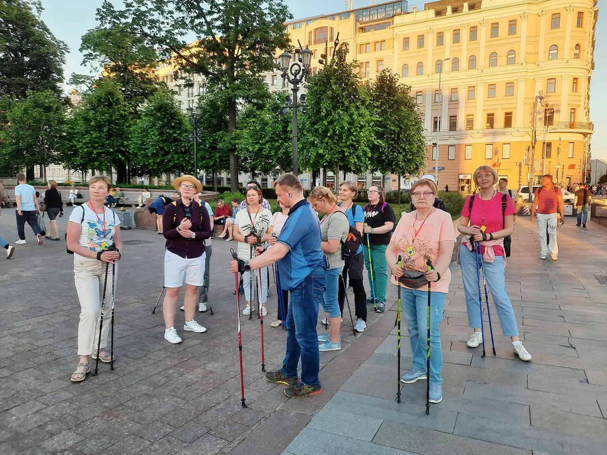

Сканди-мероприятия
-
SCANDI-прогулка "Парк Северное Тушино"
1 июля 2023г. Начало в 17:00
Длинные теплые летние вечера просто созданы для прогулок. Мы же предлагаем не просто прогуляться, но еще и потренироваться в незнакомой локации. На это раз выбран Музейно-парковый комплекс Северное Тушино и Захарковский залив.
Пройдем вдоль Химкинского водохранилища, а потом на пароме переправимся к Северному Речному вокзалу.
Территория этих природных зон пролегает вдоль живописного Химкинского водохранилища, где с набережной открывается вид на порт Северного Речного вокзала. Благоустроенный парк и яблоневый сад с сетью разнообразных дорожек просто созданы, чтобы как следует по ним походить. А Музей ВМФ удивляет масштабами представленных в открытом доступе объектов: подводной лодкой, экранопланом и десантно-штурмовым катером.
Во время прогулки обязательно немножко познакомимся с территорией, сделаем разминку, суставную и нейрогимнастику, упражнения на различные группы мышц и технику скандинавского шага, пройдем 5-7 км, сделаем заминку, полюбуемся природными видами, закатом, послушаем птиц и потом переправимся на другую сторону Химкинского водохранилища. В кафе, уже на другом берегу, будет возможность отдохнуть, перекусить или попить чай, а самое главное, пообщаться. Приглашаем провести тихий летний вечер в нашей дружелюбной компании.
Инструктор: Краснова Елена
Переправа (46 р.) оплачивается самостоятельно (наличными, банковской картой или Тройкой кошелек)
Стоимость: 1200 р
ЗаписатьсяПодробнее -
SCANDI-экскурсия "Страсти на Патриарших"
5 июля 2023г. Начало в 19:00
Некогда тихие переулки Козихи, а теперь самый богемный район столицы. Как так получилось? Патрики мало кого оставляют равнодушными: они скрыты от шумной Москвы большими домами. Здесь что ни дом, то легенда. Или дом с жильцом-легендой.
Мы заглянем в переулки и рассмотрим поближе городские детали. Увидим знаменитые шедевры архитектора Федора Шехтеля, дом со львами и настоящее итальянское палаццо.
Но главное, мы поговорим о поэтах и писателях и других творческих людях, которые связаны с этим районом. Как они любили, страдали и создавали нечто прекрасное. И сгорали порой, раньше положенного.
Место встречи: у памятника Маяковскому на Триумфальной площади (метро Маяковская, выход 4)
👣Маршрут: Триумфальная площадь-Садовое кольцо-Малая Бронная – Ермолаевский переулок- Большой Патриарший переулок- Спиридоновка-Спиридоньевский переулок- Трехпрудный переулок-Большой Козихинский переулок – Малая Никитская улица
Окончание: церковь Большое Вознесение у Никитский ворот.
Продолжительность 2,5 часа.
Экскурсовод Блинова Елизавета
Инструктор Волосюк Маргарита
В программе: сканди-разминка и заминка и увлекательный пешеходный маршрут с рассказом очень интересного экскурсовода.
Стоимость: 1500 при регистрации до 3 июля 2023г.
Стоимость: 1800 при регистрации в течение 3-5 июля 2023г.
ЗаписатьсяПодробнее -
Дорога в Лавру (часть 5) Ашукино – Мураново – Радонеж
22 июля 2023г. Начало в 9:00
Сергий Радонежский – один из самых почитаемых святых на Руси. А с конца XIV в., основанный им, Троицкий монастырь стал центром паломничества. Совершать паломничество в Троицкую обитель стало традицией, как у простого люда, так и у знатного. Причем проделать путь до монастыря надо было обязательно пешком.
Мы разделили дорогу на несколько этапов. На этот раз пойдем от станции Ашукинская до станции Радонеж. По пути посетим с экскурсией Усадьбу Мураново. Маршрут очень живописный и интересный. Почти весь путь проходит по лесной тропе, через луга, вдоль небольшой речки. По дороге встречаются святые источники, церкви и маленькие приятные сюрпризы.
Посещение усадебного дома возможно только с экскурсией.
Экскурсия по желанию. Кто не захочет идти в усадебный дом, сможет подождать нас в парке.
На территории музея есть кафе, где мы сможем пообедать. В меню всегда есть щи из квашеных ананасов (любимое блюдо обитателей усадьбы) и обязательно что-нибудь еще на выбор. А также вторые блюда, пирожки, блинчики и напитки.
Во время прогулки сделаем разминку, суставную, дыхательную и нейрогимнастику, упражнения на различные группы мышц и технику скандинавского шага, в завершении обязательная растяжка.
Одежда удобная, спортивная по погоде, головной убор, сидушка, перекус, питье, репеллент, дождевик. В святом источнике есть специально-оборудованная купель. Желающие смогут окунуться.
И самое главное – хорошее настроение! Обязательно возьмите его с собой!
Протяженность всего маршрута: ок.20 км. В спокойном темпе, с остановками и перекусами проходится достаточно легко.
Продолжительность: весь день (от 7 часов)
Инструктор: Краснова Елена
Посещение Музея-усадьбы Мураново за отдельную плату:
450 р полный билет, 400 р – льготный.
Посещение усадебного парка: 50 р полный, 30 р – льготный.
При себе иметь документ, подтверждающий льготу.
После регистрации Вы получите информационное письмо с подробной информацией по времени и месту встречи.
Стоимость: 1500 при регистрации до 20 июля 2023г.
Стоимость: 1800 при регистрации в течение 20-22 июля 2023г.
Записаться Подробнее
Подробнее